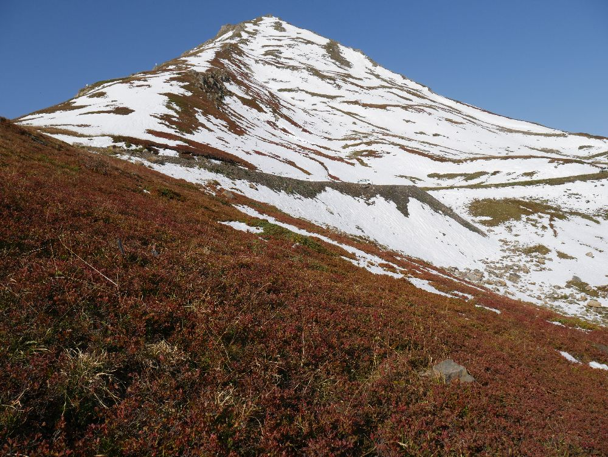
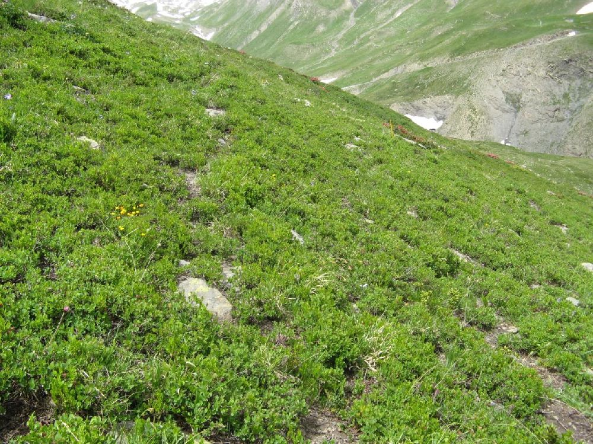
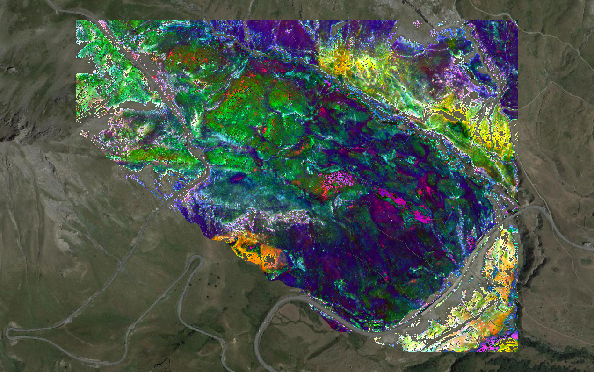

Map diversity from Lautaret HS image
Jean-Baptiste Féret, Florian de Boissieu
2024-08-20
Source:vignettes/biodivMapR_10.Rmd
biodivMapR_10.RmdThis tutorial illustrates how to run biodivMapR in order
to map spectral diversity based on a set of spectral indices.
The study site (Roche Noire) is a high elevation watershed located next to the Lautaret pass (France, Hautes Alpes) in the south-western Alps. N 45° 02′ 07″, E 6° 24′ 20″
More information about the study area and data used for this illustration can be found in Pottier et al. (2014).
Download imaging spectroscopy data and corresponding ground plots
the image is available as a zip archive from a gitlab repository.
The image is an ENVI raster acquired with the dual Airborne Imaging Spectroradiometer for Applications (AISA; Specim Ltd., Finland) on July 23rd, 2008, including :
A binary file (which has no extension here).
A header file (with .hdr extension).
The header file is a text file including all necessary metadata which can be read with a text editor. It includes image dimensions, projection, and the name and central wavelength for each spectral band.
# load biodivMapR and useful libraries
library(biodivMapR)
library(utils)
library(stars)
library(zip)
library(tools)
# directory where data will be downloaded
PathData <- '01_DATA'
dir.create(PathData,showWarnings = F)
# url for the zip file containing imaging spectroscopy data
url <- 'https://gitlab.com/jbferet/myshareddata/-/raw/master/Lautaret_HSI/ROCHENOIRE_HSI.zip'
# name zip file including plots located on the tile
destzip <- file.path(PathData,basename(url))
# download and unzip data
download.file(url = url, destfile = destzip)
ImDir <- file.path(PathData,'HSI_Lautaret')
unzip(zipfile = destzip,exdir = ImDir)
# define relative path for image name
ImName <- tools::file_path_sans_ext(list.files(ImDir,pattern = '.hdr'))
Input_Image_File <- file.path(ImDir,ImName)Once opened in QGIS, the image should look like this:

- FG : open subalpine grasslands dominated by Festuca violacea, mostly found on south-facing steep slopes .
- FP : tall subalpine grasslands dominated by Patzkea paniculata (syn. Festuca paniculata), mostly found on south-facing gentle slopes with deep soil .
- SC : sparsely vegetated grasslands dominated by Sesleria caerulea on south-facing, debris-covered slopes .
- V: low stature heaths dominated by Vaccinium uliginosum and Vaccinium myrtillus, mostly found on north-facing slopes .
 Overview of the site
Overview of the site
| Illustration of FP type | Illustration of FP type |
|---|---|

|

|
| Illustration of V type | Illustration of V type |
|  |  |
| Illustration of FV type | Illustration of S type |

|

|
Compute spectral indices from imaging spectroscopy
The computation of spectral indices can be performed with the package
spinR. Please refer to the homepage and follow
instructions for installation.
Load additional libraries and prepare data for computation
We will first read the imaging spectroscopy raster with the
raster package. We will also get the central wavelength
corresponding to each spectral band in the file from the header
file, which is critical for the automated computation of
spectral indices.
library(spinR) # https://gitlab.com/jbferet/spinr
library(stars)
library(raster)
#
ImBrick <- raster::brick(Input_Image_File)
HDR <- read_ENVI_header(get_HDR_name(Input_Image_File))
SensorBands <- HDR$wavelengthComputation of spectral indices
We select a set of spectral indices identified as relevant for the estimation of various vegetation traits.
These spectral indices and the corresponding leaf traits are the following ones:
** TCARI/OSAVI (Haboudane et al. (2002)), which is supposed to be related to leaf chlorophyll content.
** ND_LMA (le Maire et al. (2008)), which is supposed to be related to Leaf Mass per Area (LMA).
** CR_SWIR (Féret, 2020 - unpublished), which is supposed to be related to Equivalent Water Thickness (EWT).
The NDVI is also computed in order to mask non vegetated pixels based on a simple tresholding.
Here, we are using the function
ComputeSpectralIndices_fromExpression to compute spectral
indices based on an expression.
ReflFactor <- 10000 # using reflectance data coded in Int16 between 0 and 10000
############################# NDVI ###################################
# 1- Define the expression corresponding to the spectral index
Expression_NDVI <- '(B2-B1)/(B2+B1)'
# 2- Define the spectral bands corresponding to bands in the spectral index,
# identified as BXX, with XX the number of the band
Bands_NDVI <- list()
Bands_NDVI[['B1']] <- 665
Bands_NDVI[['B2']] <- 835
# 3- Compute the spectral indices
NDVI <- spinR::compute_SI_fromExp(Refl = ImBrick,
SensorBands = SensorBands,
ExpressIndex = Expression_NDVI,
listBands = Bands_NDVI,
ReflFactor = ReflFactor,
NameIndex = 'NDVI')
############################# TCARI/OSAVI ##################################
# _______________ TCARI ________________
# 1- spectral bands to be used
Bands_TCARI <- list()
Bands_TCARI[['B1']] <- 700
Bands_TCARI[['B2']] <- 670
Bands_TCARI[['B3']] <- 550
# 2- Formula for the index
Formula_TCARI <- '3*(B1-B2-0.2*(B1-B3)*(B1/B2))'
# 3- application of spectral index on image
TCARI <- spinR::compute_SI_fromExp(Refl = ImBrick,
SensorBands = SensorBands,
ExpressIndex = Formula_TCARI,
listBands = Bands_TCARI,
ReflFactor = ReflFactor,
NameIndex = 'TCARI')
# _______________ OSAVI ________________
# 1- spectral bands to be used
Bands_OSAVI <- list()
Bands_OSAVI[['B1']] <- 800
Bands_OSAVI[['B2']] <- 700
Bands_OSAVI[['B3']] <- 670
# 2- Formula for the index
Formula_OSAVI <- '1.16*(B1-B3)/(B2+B3-0.16)'
# 3- application of spectral index on image
OSAVI <- spinR::compute_SI_fromExp(Refl = ImBrick,
SensorBands = SensorBands,
ExpressIndex = Formula_OSAVI,
listBands = Bands_OSAVI,
ReflFactor = ReflFactor,
NameIndex = 'OSAVI')
# _______________ Compute TCARI/OSAVI _________________
message('computing TCARI/OSAVI')
TCARI_OSAVI <- TCARI/OSAVI
names(TCARI_OSAVI) <- 'TCARI_OSAVI'
############################# CR_SWIR ##################################
# 1- The expression for computation of continuum removal is already coded in spinR
# 2- Define the spectral bands corresponding to bands in the spectral index
Bands_CR_SWIR <- list()
Bands_CR_SWIR[['CRmin']] <- 1150
Bands_CR_SWIR[['CRmax']] <- 2200
Bands_CR_SWIR[['target']] <- 1550
# 3- Compute the spectral indices
CR_SWIR <- spinR::CR_WL(Refl = ImBrick,
SensorBands = SensorBands,
CRbands = Bands_CR_SWIR,
ReflFactor = ReflFactor)
CR_SWIR <- CR_SWIR[[1]]
############################# ND_LMA ##################################
# 1- Define the expression corresponding to the spectral index
Expression_ND_LMA <- '(B2-B1)/(B2+B1)'
# 2- Define the spectral bands corresponding to bands in the spectral index
Bands_ND_LMA <- list()
Bands_ND_LMA[['B1']] <- 1490
Bands_ND_LMA[['B2']] <- 2260
# 3- Compute the spectral indices
ND_LMA <- spinR::CR_WL(Refl = ImBrick,
SensorBands = SensorBands,
ExpressIndex = Expression_ND_LMA,
listBands = Bands_ND_LMA,
ReflFactor = ReflFactor,
NameIndex = 'ND_LMA')
############################# ANCB ##################################
message('computing ANCB')
AUCminmax <- list()
AUCminmax[['CRmin']] <- 650
AUCminmax[['CRmax']] <- 720
ANCB <- spinR::AUC(Refl = ImBrick,
SensorBands = SensorBands,
AUCminmax = AUCminmax,
ReflFactor = ReflFactor)
AUCminmax[['target']] <- 670
ANCB <- ANCB/(1-spinR::CR_WL(Refl = ImBrick,
SensorBands = SensorBands,
CRbands = AUCminmax,
ReflFactor = ReflFactor)[[1]])Once computed, we we perform interquartile analysis on these spectral indices in order to mask outliers.
Then we write these indices as individual raster files.
## Save these spectral indices as raster files
NameIndices <- c("NDVI", "TCARI_OSAVI", "CR_SWIR", "ND_LMA", "ANCB")
# directory where data will be downloaded
PathOut <- '03_RESULTS'
dir.create(PathOut,showWarnings = F)
Index_Path <- list()
for (SI in NameIndices){
# first exclude outliers and Inf values
IQRminmax <- IQR_outliers(DistVal = values(eval(parse(text = SI))))
eval(parse(text = paste(parse(text = SI),'[',parse(text = SI),'<IQRminmax[1] | ',
parse(text = SI),'>IQRminmax[2]] <- NA',sep = '')))
Index_Path[[SI]] <- file.path(PathOut,paste('HSI_Lautaret_',SI,sep = ''))
stars::write_stars(st_as_stars(eval(parse(text = SI))), dsn=Index_Path[[SI]], driver = "ENVI",type='Float32')
# write band name in HDR
HDR <- read_ENVI_header(get_HDR_name(Index_Path[[SI]]))
HDR$`band names` <- SI
write_ENVI_header(HDR = HDR,HDRpath = get_HDR_name(Index_Path[[SI]]))
}The following figure displays a color composition of three indices:
TCARI/OSAVI .
CR_SWIR .
ANCB .

Correlation analysis of spectral indices
The correlation between spectral indices can be performed.
library(corrplot)
# 1- create a data.frame from all spectral indices
df_Indices <- data.frame('TCARI_OSAVI' = raster::values(TCARI_OSAVI), 'CR_SWIR' = raster::values(CR_SWIR),
'ND_LMA' = raster::values(ND_LMA), 'ANCB' = raster::values(ANCB))
# 2- create a list of raster objects
Spectral_Indices <- list()
Spectral_Indices[['TCARI_OSAVI']] <- TCARI_OSAVI
Spectral_Indices[['CR_SWIR']] <- CR_SWIR
Spectral_Indices[['ND_LMA']] <- ND_LMA
Spectral_Indices[['ANCB']] <- ANCB
M <- cor(df_Indices,use = 'complete.obs')
corrplot(M, method = 'ellipse', order = 'AOE', type = 'upper')Stacking and writing spectral indices in format expected by biodivMapR
Once the spectral indices are computed, they will be stacked and written in ENVI format with BIL interleaves.
Mask data from spectral indices and apply the mask on spectral indices
# stack spectral indices
Index_Path[['NDVI']] <- NULL
Mask <- 0*NDVI+1
names(Mask) <- 'Mask'
StarsObj <- read_ListRasters(Index_Path)
# remove outliers from spectral indices
for (SI in names(Spectral_Indices)){
rast <- Spectral_Indices[[SI]]
IQRminmax <- IQR_outliers(DistVal = raster::values(rast),weightIRQ = 3)
Mask[rast<IQRminmax[1] | rast>IQRminmax[2] | is.na(rast)] <- NA
}
Mask[NDVI<0.5] <- NA
# apply mask on stack and convert as stars object
StarsObj <- st_as_stars(as(object = StarsObj,Class = 'Raster')*Mask)Save Mask file and spectral indices as raster stack
# save mask in raster file
Input_Mask_File <- file.path(PathOut,'Mask')
stars::write_stars(st_as_stars(Mask), dsn=Input_Mask_File, driver = "ENVI",type='Byte')
# define path where to store spectral indices (same as root path for biodivMapR output directory)
NameRaster <- 'HSI_Lautaret'
NameStack <- paste(NameRaster,'_StackIndices',sep = '')
# save Stack of spectral indices in raster file with spectral indices defining band names
Path_StackIndices <- file.path(PathData,NameStack)
biodivMapR::write_StarsStack(StarsObj = StarsObj,
dsn = Path_StackIndices,
BandNames = names(Index_Path),
datatype = 'Float32')Run biodivMapR on a raster stack
Set parameters for biodivMapR
# see additional information here
# https://jbferet.github.io/biodivMapR/articles/biodivMapR_02.html
# Define path for original image file to be processed
Input_SIstack_File <- Path_StackIndices
# trick to define the same directory as PathIndices defined in previous chunk
TypePCA <- 'noPCA'
# Define path for master output directory where files produced during the process are saved
Output_Dir <- PathOut
# window size forcomputation of spectral diversity
window_size <- 10
# computational parameters
nbCPU <- 4
MaxRAM <- 0.5
# number of clusters (spectral species)
nbclusters <- 50
# use 10% of image to sample pixels and partition it in 20 runs of kmeans
NbPix <- sum(Mask[,,,1],na.rm = T)
nb_partitions <- 20
Pix_Per_Partition <- round(0.1*NbPix/nb_partitions)Perform Spectral species mapping
# https://jbferet.github.io/biodivMapR/articles/biodivMapR_05.html
print("MAP SPECTRAL SPECIES")
# select all spectral indices
SelectedPCs <- seq(1,dim(raster::stack(Input_SIstack_File))[3])
SpectralSpace_Output <- list('PCA_Files' = Input_SIstack_File,
'TypePCA' = TypePCA)
Kmeans_info <- map_spectral_species(Input_Image_File = Input_SIstack_File,
Input_Mask_File = Input_Mask_File,
Output_Dir = Output_Dir,
SpectralSpace_Output = SpectralSpace_Output,
nbclusters = nbclusters,
nbCPU = nbCPU, MaxRAM = MaxRAM,
SelectedPCs = SelectedPCs)Map diversity indices
# https://jbferet.github.io/biodivMapR/articles/biodivMapR_06.html
print("MAP ALPHA DIVERSITY")
Index_Alpha <- c('Shannon')
map_alpha_div(Input_Image_File = Input_SIstack_File,
Input_Mask_File = Input_Mask_File,
Output_Dir = Output_Dir,
TypePCA = TypePCA,
window_size = window_size,
nbCPU = nbCPU,
MaxRAM = MaxRAM,
Index_Alpha = Index_Alpha,
nbclusters = nbclusters)
print("MAP BETA DIVERSITY")
map_beta_div(Input_Image_File = Input_SIstack_File,
Output_Dir = Output_Dir,
TypePCA = TypePCA,
window_size = window_size,
nbCPU = nbCPU,
MaxRAM = MaxRAM,
nbclusters = nbclusters)
# print("MAP FUNCTIONAL DIVERSITY")
# https://jbferet.github.io/biodivMapR/articles/biodivMapR_07.html
# Villeger et al, 2008 https://doi.org/10.1890/07-1206.1
# map_functional_div(Original_Image_File = Input_SIstack_File,
# Functional_File = Input_SIstack_File,
# Selected_Features = SelectedPCs,
# Output_Dir = Output_Dir,
# window_size = window_size,
# nbCPU = nbCPU,
# MaxRAM = MaxRAM,
# TypePCA = TypePCA)The map corresponding to beta-diversity (based on a principal coordinate analysis applied to Bray Curts dissimilarity matrix) is displayed hereafter:

Perform validation based on a vectorized plot network
First, the zip file containing the shapefile with field plots needs to be downloaded from the repository and unzipped.
# url for the zip file containing imaging spectroscopy data
url <- 'https://gitlab.com/jbferet/myshareddata/-/raw/master/Lautaret_HSI/ROCHENOIRE_PLOTS.zip'
# name zip file including plots located on the tile
destzip <- file.path(PathData,basename(url))
# download and unzip data
download.file(url = url, destfile = destzip)
unzip(zipfile = destzip,exdir = PathData)
VectorDir <- file.path(PathData,file_path_sans_ext(basename(url)))Then the validation can be performed.
The same procedure as in the previous tutorial can be applied.
# list vector data
Path_Vector <- list_shp(VectorDir)
Name_Vector <- tools::file_path_sans_ext(basename(Path_Vector))
NamePlots <- terra::vect(Path_Vector)$ID
# location of the spectral species raster needed for validation
Path_SpectralSpecies <- Kmeans_info$SpectralSpecies
# get diversity indicators corresponding to shapefiles (no partitioning of spectral dibversity based on field plots so far...)
Biodiv_Indicators <- diversity_from_plots(Raster_SpectralSpecies = Path_SpectralSpecies, Plots = Path_Vector,
nbclusters = nbclusters, Raster_Functional = FALSE,
Selected_Features = SelectedPCs, Name_Plot = NamePlots)
# identify which plots were in the image
WhichPlots <- which(!is.na(Biodiv_Indicators$Shannon) & !Biodiv_Indicators$Shannon==0)
NamePlot <- Biodiv_Indicators$Name_Plot[WhichPlots]
TypeCommunity <- terra::vect(Path_Vector)$COMM[WhichPlots]
Richness_RS <- Biodiv_Indicators$Richness[[1]][WhichPlots]
Shannon_RS <- Biodiv_Indicators$Shannon[[1]][WhichPlots]
# write a table for Shannon index
Path_Results <- file.path(Output_Dir,NameStack,TypePCA,'VALIDATION')
dir.create(Path_Results, showWarnings = FALSE,recursive = TRUE)
# write a table for all spectral diversity indices corresponding to alpha diversity
Results <- data.frame('ID_Plot'=NamePlot, 'Species_Richness'=Richness_RS, 'Shannon'=Shannon_RS)
write.table(Results, file = file.path(Path_Results,"AlphaDiversity.csv"),
sep="\t", dec=".", na=" ", row.names = F, col.names= T,quote=FALSE)
# write a table for Bray Curtis dissimilarity
BC_mean <- Biodiv_Indicators$BCdiss[WhichPlots,WhichPlots]
colnames(BC_mean) <- rownames(BC_mean) <- NamePlot
write.table(BC_mean, file = file.path(Path_Results,"BrayCurtis.csv"),
sep="\t", dec=".", na=" ", row.names = F, col.names= T,quote=FALSE)
# apply ordination using PCoA (same as done for map_beta_div)
MatBCdist <- as.dist(BC_mean, diag = FALSE, upper = FALSE)
BetaPCO <- labdsv::pco(MatBCdist, k = 3)
# assign a type of vegetation to each plot
NameCommunity <-unique(TypeCommunity)
# create data frame including a selection of alpha diversity metrics and beta diversity expressed as coordinates in the PCoA space
Results <- data.frame('vgtype'=TypeCommunity,
'pco1'= BetaPCO$points[,1],'pco2'= BetaPCO$points[,2],'pco3' = BetaPCO$points[,3],
'shannon'=Shannon_RS)
library(ggplot2)
library(gridExtra)
# plot field data in the PCoA space, with size corresponding to shannon index
g1 <-ggplot (Results, aes (x=pco1, y=pco2, color=vgtype,size=shannon)) +
geom_point(alpha=0.6) +
scale_color_manual(values=c("#e6140a", "#e6d214", "#e68214", "#145ae6"))
g2 <-ggplot (Results, aes (x=pco1, y=pco3, color=vgtype,size=shannon)) +
geom_point(alpha=0.6) +
scale_color_manual(values=c("#e6140a", "#e6d214", "#e68214", "#145ae6"))
g3 <-ggplot (Results, aes (x=pco2, y=pco3, color=vgtype,size=shannon)) +
geom_point(alpha=0.6) +
scale_color_manual(values=c("#e6140a", "#e6d214", "#e68214", "#145ae6"))
#extract legend
#https://github.com/hadley/ggplot2/wiki/Share-a-legend-between-two-ggplot2-graphs
get_legend <- function(a.gplot){
tmp <- ggplot_gtable(ggplot_build(a.gplot))
leg <- which(sapply(tmp$grobs, function(x) x$name) == "guide-box")
legend <- tmp$grobs[[leg]]
return(legend)
}
legend <- get_legend(g3)
gAll <- grid.arrange(arrangeGrob(g1 + theme(legend.position="none"),
g2 + theme(legend.position="none"),
g3 + theme(legend.position="none"),
nrow=1),legend,nrow=2,heights=c(5, 4))
filename <- file.path(Path_Results,'BetaDiversity_PcoA1_vs_PcoA2_vs_PcoA3.png')
ggsave(filename, plot = gAll, device = 'png', path = NULL,
scale = 1, width = 12, height = 7, units = "in",
dpi = 600, limitsize = TRUE)
library(ggplot2)
# plot field data in the PCoA space, with size corresponding to shannon index
ggplot(Results, aes(x=pco1, y=pco2, color=vgtype,size=shannon)) +
geom_point(alpha=0.6) +
scale_color_manual(values=c("#e6140a", "#e6d214", "#e68214", "#145ae6"))
filename = file.path(Path_Results,'BetaDiversity_PcoA1_vs_PcoA2.png')
ggsave(filename, plot = last_plot(), device = 'png', path = NULL,
scale = 1, width = 6, height = 4, units = "in",
dpi = 600, limitsize = TRUE)
ggplot(Results, aes(x=pco1, y=pco3, color=vgtype,size=shannon)) +
geom_point(alpha=0.6) +
scale_color_manual(values=c("#e6140a", "#e6d214", "#e68214", "#145ae6"))
filename = file.path(Path_Results,'BetaDiversity_PcoA1_vs_PcoA3.png')
ggsave(filename, plot = last_plot(), device = 'png', path = NULL,
scale = 1, width = 6, height = 4, units = "in",
dpi = 600, limitsize = TRUE)
ggplot(Results, aes(x=pco2, y=pco3, color=vgtype,size=shannon)) +
geom_point(alpha=0.6) +
scale_color_manual(values=c("#e6140a", "#e6d214", "#e68214", "#145ae6"))
filename = file.path(Path_Results,'BetaDiversity_PcoA2_vs_PcoA3.png')
ggsave(filename, plot = last_plot(), device = 'png', path = NULL,
scale = 1, width = 6, height = 4, units = "in",
dpi = 600, limitsize = TRUE)The resulting figures are displayed below.

This data acquisition was initiated and supported by the European ECOCHANGE project (GOCE-CT-2007-036866) and the Swiss National Science Foundation (BIOASSEMBLE, 31003A-125145).